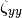
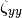
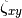
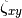

biweight_midcorrelation¶
-
astropy.stats.biweight_midcorrelation(x, y, c=9.0, M=None, modify_sample_size=False)[source] [edit on github]¶ Compute the biweight midcorrelation between two variables.
The biweight midcorrelation is a measure of similarity between samples. It is given by:
where
 is the biweight midvariance of
is the biweight midvariance of  ,
 is the biweight midvariance of
,
 is the biweight midvariance of  , and
 is the biweight midcovariance of and
.
, and
 is the biweight midcovariance of and
.Parameters: x, y : 1D array-like
Input arrays for the two variables.
xandymust be 1D arrays and have the same number of elements.c : float, optional
Tuning constant for the biweight estimator (default = 9.0). See
biweight_midcovariancefor more details.M : float or array-like, optional
The location estimate. If
Mis a scalar value, then its value will be used for the entire array (or along eachaxis, if specified). IfMis an array, then its must be an array containing the location estimate along eachaxisof the input array. IfNone(default), then the median of the input array will be used (or along eachaxis, if specified). Seebiweight_midcovariancefor more details.modify_sample_size : bool, optional
If
False(default), then the sample size used is the total number of elements in the array (or along the inputaxis, if specified), which follows the standard definition of biweight midcovariance. IfTrue, then the sample size is reduced to correct for any rejected values (i.e. the sample size used includes only the non-rejected values), which results in a value closer to the true midcovariance for small sample sizes or for a large number of rejected values. Seebiweight_midcovariancefor more details.Returns: biweight_midcorrelation : float
The biweight midcorrelation between
xandy.References
[R58] https://en.wikipedia.org/wiki/Biweight_midcorrelation Examples
Calculate the biweight midcorrelation between two variables:
>>> import numpy as np >>> from astropy.stats import biweight_midcorrelation >>> rng = np.random.RandomState(12345) >>> x = rng.normal(0, 1, 200) >>> y = rng.normal(0, 3, 200) >>> # Introduce an obvious outlier >>> x[0] = 30.0 >>> bicorr = biweight_midcorrelation(x, y) >>> print(bicorr) -0.0495780713907